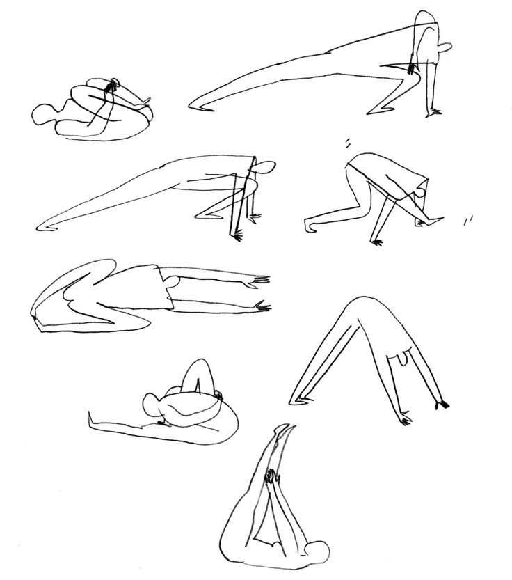
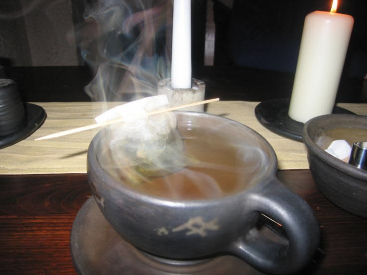
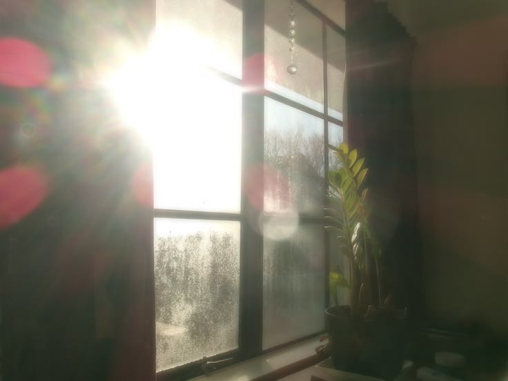
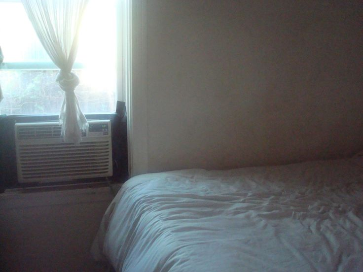

STEP ONE
Stretch Your Body
After waking up, gently stretch your arms, legs, and back. Stretching helps your body wake up and feel ready for the day.

STEP TWO
Drink Warm Tea
Make a cup of warm tea and drink it slowly. It helps you feel comfortable and gives you a peaceful moment.

STEP THREE
Open the Window
Open the window and enjoy the fresh air and sunlight. Natural light can help you feel awake and refreshed.

STEP FOUR
Make Your Bed
Organize your blankets and pillows. Making your bed keeps your room clean and gives you a small sense of accomplishment.
STEP FIVE
Meditate or Write
Spend a few quiet minutes meditating or writing down something you are thankful for. This helps you begin the day with a positive mindset.